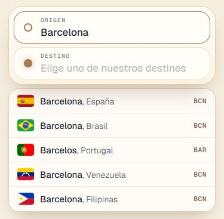
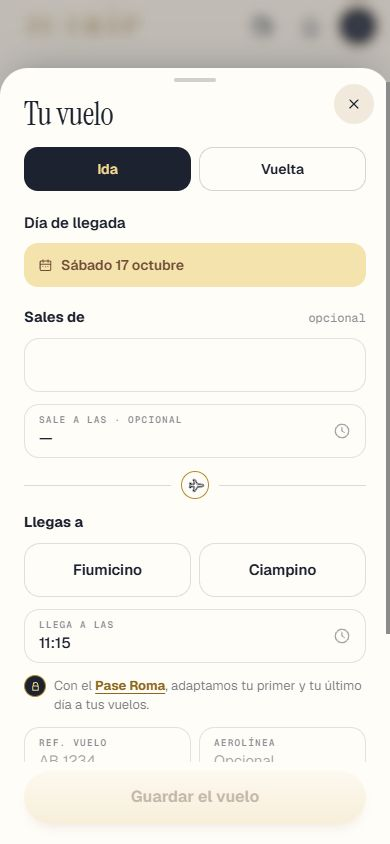
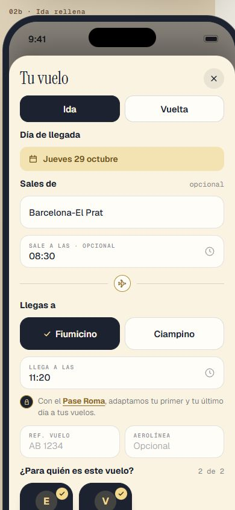
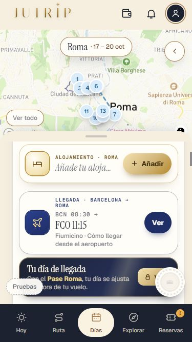
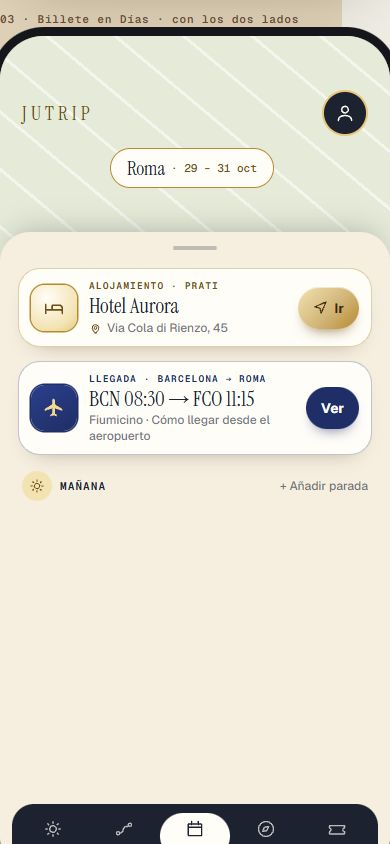
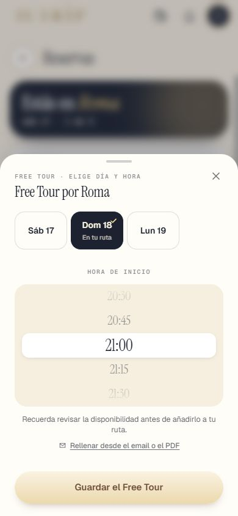
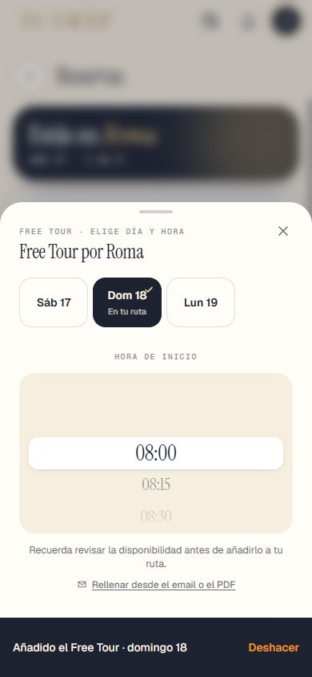
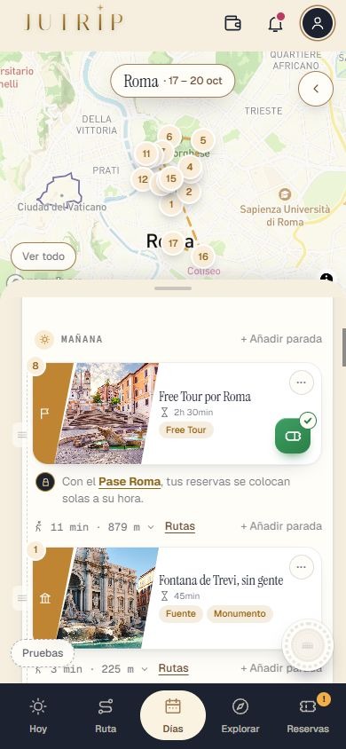
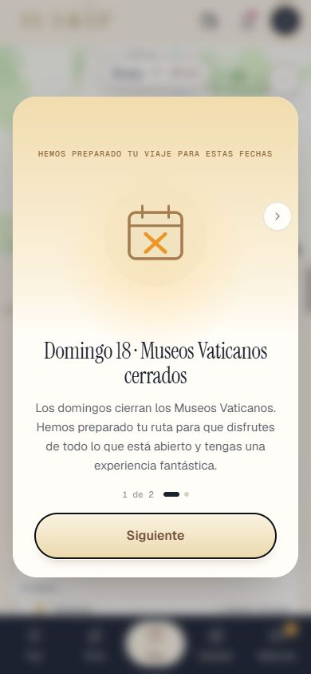

Repaso de la Tanda 10S3
La batería de pruebas en 0 fallos de una pasada (tres veces seguidas y en 35 minutos), la descarga más ligera, las zonas de toque de 44 px y los retoques de la 10N12. Marca cada punto en tu teléfono cuando lo hayas comprobado (se guarda en este navegador).
0 · Antes de empezar ✅ Hecho — Prompt guardado en docs/dias/PROMPT_TANDA10S3.md; Design al día (Vuelo Reservas y Alojamiento Dias)No se apaga el PC. Dónde: No es de móvil. 1 · Ciudad de salida confundida por nombre ✅ Hecho — La tabla de tiempos de Roma solo vale con nombre, país y coordenadas a ≤50 km; la caché ya no mezcla ciudades con el mismo nombreCórdoba y Mérida no están en la tabla: se tratan como cualquier ciudad. Las filas viejas de la caché quedan huérfanas (una llamada más a Claude por ciudad). Dónde: Primera pantalla, cualquier cuenta: origen «Barcelona, Brasil» y destino Roma: no salen los tiempos de España; con «Barcelona, España» sí. 2 · Resultados con el teclado ✅ Hecho — Al tocar origen o destino la tarjeta sube, los resultados salen bajo el campo con bandera, ciudad y país, y se esconden logo, «Volver a mi viaje» y mapaProbado con teclado simulado (no es el de Safari). A 375×667 con 5 resultados no sobra ni un píxel. Dónde: iPhone: primera pantalla, tocar origen y escribir «Barcelona». 
3 · «Ha cambiado el viaje» en viaje nuevo ✅ Hecho — Los guardados propios de la generación se apuntan como propios: ya no sale la línea ni se sustituye la rutaCausa: el último guardado de la generación no se apuntaba como propio y su eco por Realtime se tomaba por un cambio ajeno. Probado con el Supabase real. Dónde: Con tu cuenta: crea un viaje nuevo y espera 10 segundos en RUTA o DÍAS. 4 · Hoja del vuelo con sus dos lados ✅ Hecho — Sin caja amarilla; Ida y Vuelta con «Sales de», «Sale a las», «Llegas a», «Llega a las» y el medio de transporte en medioLínea del pase también en la Vuelta sin pase. Sin migración (los campos ya existían). Dónde: RESERVAS > Llegada y vuelta > Tu vuelo, con y sin pase. 

⚠️ A medias — Tren, autobús y barco con la misma hoja («Tu tren», «Guardar el tren», estaciones o puertos)Mismo código y textos probados por prueba, pero sin captura propia de cada uno. Dónde: Un viaje en tren: RESERVAS > Tu tren. 4 · Billete en DÍAS y HOY ✅ Hecho — DÍAS: «BCN 08:30 → FCO 11:15» (apilado a 375 px, sin cortar la hora) o solo «FCO 11:15»; el código de fuera es el escrito entre paréntesis o el de la ciudad de origenDónde: DÍAS, día 1, con el vuelo guardado. 

⚠️ A medias — HOY: el billete usa el mismo código de fuera (BCN, MAD), pero conserva su tarjeta de siempreDuda para Eric: ¿HOY también en una línea «BCN 08:30 → FCO 11:15»? Design solo dibuja DÍAS. Dónde: HOY con el vuelo guardado. 5 · Free Tour por el camino viejo ✅ Hecho — Reservar o cambiar la hora del Free Tour deja la parada donde está: sin mover días, sin mensaje, sin cambiar de franjaCausa: el plan de reservas trataba el Free Tour a las 21:00 como «de noche» y comparaba dos viajes distintos. Riesgo anotado: reservasParaMotor puede mandar el Free Tour a rehacer días posteriores. Dónde: RESERVAS > Free Tour > día donde ya está > 21:00 > Guardar; mira DÍAS. 
✅ Hecho — Las seis horas fijas se sustituyen por la rueda de horas de las entradasLas seis eran nuestras (turnos_reserva de roma.json), no horas publicadas por el tour. Dónde: RESERVAS > Free Tour. 
✅ Hecho — Qué otras reservas siguen el camino viejoEntradas de sitios grandes en OTRO día siguen moviendo el día entero (regla 6j); excursiones convierten el día en excursión a propósito; el resto va bien. Dónde: No es de móvil. 6 · Reserva que no cuadra con su franja ✅ Hecho — Sin pase, línea gris del pase bajo la parada cuando la hora no cuadra con su franja; con pase, nadaCortes 14:00 y 20:00. Dónde: Sin pase: DÍAS, parada con reserva en otra franja; tocar la línea. 
7 · Elegir día en cuadrados ✅ Hecho — Los días de la hoja de reservas (entradas, Free Tour, excursiones) son cuadrados; el elegido, azul oscuro con ✓ doradoOtras hojas ya eran filas o no tienen selector de día. Regla añadida. Dónde: RESERVAS > cualquier entrada o Free Tour. 8 · Fotos del acordeón de DÍAS ✅ Hecho — Las paradas vuelven a mostrar su fotoMisma causa que el apartado 3 (la copia de la nube sin fotos sustituía la ruta viva), desde la 10N. Los viajes viejos pueden seguir sin fotos hasta rehacerse. errores_pantalla está vacía. Dónde: Viaje nuevo > DÍAS > día 1 abierto. 9 · Foto de noche del Castillo ✅ Hecho — El Castillo de día sale con foto de día; la de noche solo en la experiencia nocturnaCausa: la foto propia estaba apuntada sin el sufijo «(por fuera)». Duda: ¿apuntar la foto «por dentro»? Viajes ya guardados pueden conservar la de noche. Dónde: DÍAS (día del Vaticano), ficha, EXPLORAR y Añadir parada. 
10 · CERRAR_SESIONES.sql ✅ Hecho — Corregido: user_id in (select id::text from cuenta)No se ha ejecutado. Dónde: No es de móvil. 11 · Prueba nueva ✅ Hecho — pruebaTanda10S3 (partes A, B, C, D) y pruebaTanda10S3_B_real (Supabase real, sola)El caso de dos cuentas (pruebaTanda10N10_avisos_real) se pasa aparte. Dónde: No es de móvil. Todas las capturas
10s_aviso_375x667 10s_cama_dia_de_prueba 10s_lista_x_375_final 10s_lista_x_final 10s_lista_x_medio 10s_mis_viajes_fechas 10s_toque_ajustes_antes 10s_toque_ajustes_despues 10s_toque_cama_antes 10s_toque_cama_despues